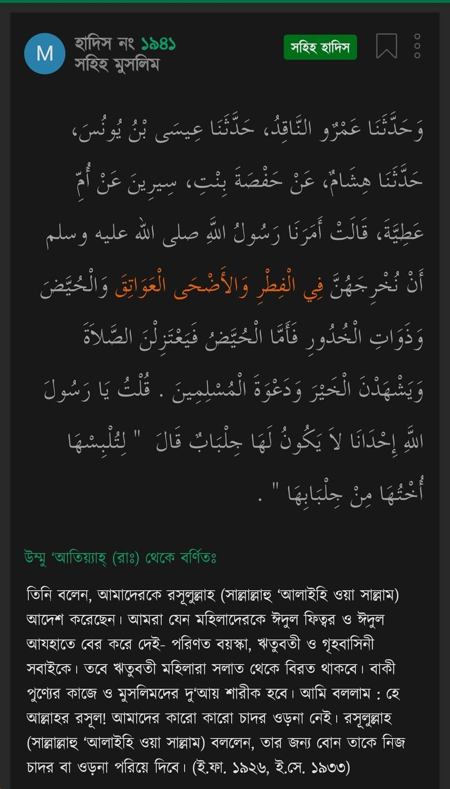

ঈদ একটি সামাজিক ইবাদাত। এতে ছোট-বড়, নারী-পুরুষ সবার অংশগ্রহণের অধিকার রয়েছে। কিন্তু…
২ মে, ২০২২
ঈদ একটি সামাজিক ইবাদাত। এতে ছোট-বড়, নারী-পুরুষ সবার অংশগ্রহণের অধিকার রয়েছে। কিন্তু পাক-ভারত-বাংলায় রাসূল সাল্লাল্লাহু আলাইহি ওয়া সাল্লমের নির্দেশ অমান্য করে নারীকে তাদের এ অধিকার থেকে কি বঞ্চিত করা হয় নি?
